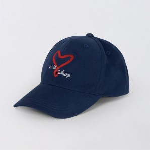
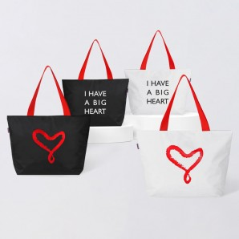
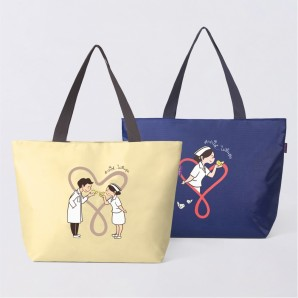
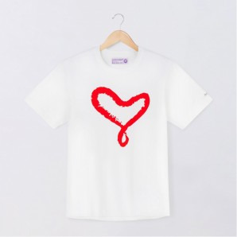

Due to the problem of treating patients without funds, their number is constantly increasing. As a result, State aid is insufficient to ensure that patients have access to treatment effectively and in a timely manner.At the same time, there are people willing to donate money. Help in many different projects
Professor Dr. Ari Valayasevi, the first Dean of the Ramatibody Medical Faculty Hospital together with the Executive Committee of the Faculty of Medicine saw the importance and possibility of treating diseases. Therefore, it was decided to create a fund to support the activities of the Faculty of Medicine as the first public hospital in Thailand under the name "Ramatibody Foundation" on May 12, 1969.
For more than 54 years, the Ramatibody Foundation has continued to act as a "Bridge of Giving" for the development of the public health industry, to produce medical personnel, to continue to provide Thais with sustainable good health in accordance with the desire to "The word "to give.".. it never ends."
You can also purchase the foundation's products. The proceeds will go to the work of the fund
| Souvenirs | |
|  120 baht |
 150 baht |
|  150 baht |
 190 baht |
Many celebrities of the entertainment industry of Thailand support the foundation and have launched the hashtag #happy football. Find your idols using the hashtag #เสื้อยืดสุขใจ and join their good actions
If you still have questions about the activities of the foundation or have suggestions for cooperation, please contact us.
You can also find us on Instagram and follow the news of the foundation's activities.
You can read more information about the foundation's projects, find contact numbers and accounts for donations on the official website of the foundation